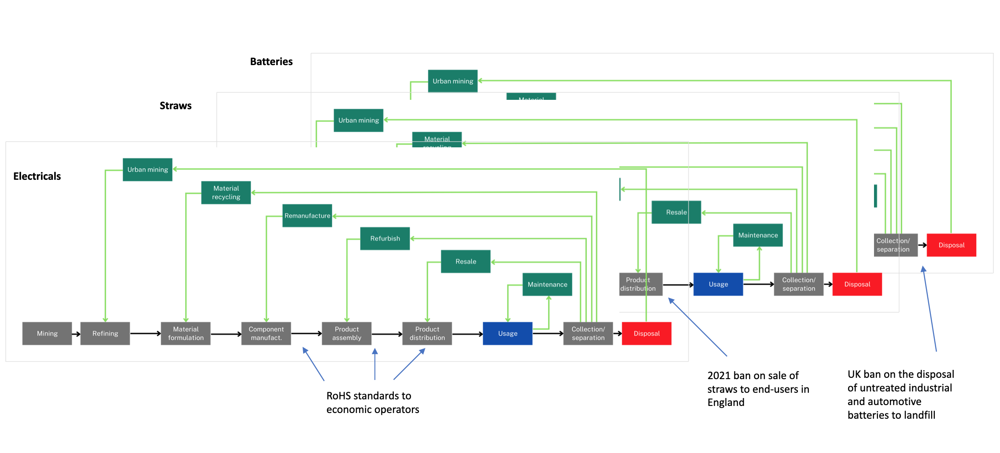

Bans and standards
Summary
How it works and current applications

Fig. Examples of current bans and standards in the UK applied across different product groups
Performance
Environmental effectiveness
Minimum eco-design standards can be used to eliminate the worst products from the market and can be ratcheted up over time to drive improvements.
- Generally good evidence these can drive change in environmental performance, though market-based mechanisms might be able to do so more effectively.
Standards have a proven track record of delivering environmental improvements across a range of contexts (Fiorino, 2006). For instance, the Ecodesign Directive has been one of the most effective tools at the level of the EU for delivering per-product energy efficiency improvements and more effective than labels (Schiellerup, 2002 ; Ecofys 2012).
• The EU Ecodesign Directive (2009/125/EC) which applies ecodesign requirements to approximately 40 energy-using and energy-related product categories, have primarily focused on energy efficiency in the past. It has been shown to be a highly effective tool for delivering cost-effective energy savings across the EU. In a 2002 study, Schiellerup found minimum efficiency performance standards introduced in 1999 contributed to a jump in efficiency of cold appliances in the UK greater than would have been expected without regulation being put in place. The majority of the reduction in average energy consumption between 1992 and 1999 (between 20-33%), occurred after the introduction of standards in 1999. Ecofys (2012) – The Ecodesign Directive which focusses on mandating energy performance standards for 40 product categories, has been one of the most effective tools at the level of the EU for delivering cost-effective energy savings. Correctly implemented, anticipated to save 400 Mtonnes of CO2 emissions annually, save households 280 euros per year, boost jobs and lessen dependence on energy imports. The success of energy efficiency standards could be replicated through minimum eco-design standards for resource efficiency.
• As regulations may need to be highly specific, this may limit the impact to the sectors they are specified to (Anderson et al. 2011). Because command-based regulations are sector-specific ,they encourage behaviour change only in the regulated sector, thereby limiting the extent of their impact.
• Performance standards e.g. on fuel economy can lead to price reductions causing consumption-based rebound effects.
• The effectiveness of performance standards is contingent on monitoring accuracy, perceptions of significant consequences for not meeting standards and congruence between regulatory and environmental outcomes (Coglianese & Nash, 2017; Skeete, 2017).
- Propinquity: C&C seen early on as way to achieve desired outcomes quickly. In phasing out leaded gasoline in Europe, progress would have been slowed without mandating catalytic converters, maxim lead content and tax differentials for instance.
The UNEP (2021) study identified fuel economy measures through the G7 as indirectly driving material light-weighting and substitution. Taxes on CO2 intensity would deliver the same outcomes and charge-based systems such as tiered parking permits levied by local councils are examples of additional measures currently being used. Risk with indirect approach is that if the indirect route of influence is disrupted, then the policy measure may no longer be effective e.g. move to electrical vehicles. Regarding more intensive use, High occupancy vehicle (HOV) lanes as used in the USA are an example of a relevant policy measure, while other measures such as preferential parking has been introduced e.g. in Seattle, Washington.
Predictability and resilience to external changes
Are predictable
• Bans are highly effective when the optimal level of a pollutant or behaviour is near to 0 as the risks of its continuation is high due to critical thresholds e.g. for human health or the environment (Howlett, 2004; Perman, 2011; OBR, 2021). Though predictable in their effective at the level of individual regulatees, technology and performance standards work slightly less effectively here due to uncertainty about new market entrants.
• Technology and performance standards will be more predictable than price-based instruments in a context of uncertainty over abatement costs which is typical (Bergquist et al. 2013).
• Assuming no subsequent updates, technology and performance standards will be more robust in generating their environmental impact than market-based instruments in contexts of inflation (Bye and Klemetsen, 2016).
Acceptability
• Bans and standards have a high level of acceptability among policy-makers. This can be due to their: predictability if policy makers are risk-averse or optimal levels of a substance or activity are low; varying departmental control over different instruments e.g. HMRC and HMT reluctance to introduce further environmental taxes; standards obfuscating the costs of pollution control (Cole, 2017).
• For Firms and organized labour: 1) because standards can improve competitiveness; 2) can cost a firm less than market-based instruments e.g. pollution taxes or permits without grandfathering, which may also be treated with suspicion of becoming a general revenue-raising tax; 3) may allow firms to protect or expand market dominance (Cole, 2017) e.g. technology standards can allow incumbent technologies to remain cost-competitive.
• Advocacy groups may prefer regulatory instruments as MBIs viewed as providing a license to pollute, placing a value on the environment.
Allocative/cost-efficiency
• Total costs to firms can be lower than price-based instruments due to there not being a tax burden.
• Technology standards don’t give the flexibility to regulatees to utilise all least-cost abatement channels, and may not for performance standards depending on how they are applied (Parry, Evans and Oates, 2010).
• Standards can be statically efficient when all abatement channels need to be engaged or alternatively, aggregate abatement costs are likely to be low (Kemp and Pontaglio, 2011).
• Abatement costs are imposed evenly by standards so if there is high marginal abatement cost heterogeneity between regulatory subjects, unlikely to be as efficient (Newell and Stavins, 2003).
For command-based regulation to be cost-efficient, regulators must know each polluter’s marginal abatement cost curve based on the equimarginal principle (Baumol and Oates, 1988). In contexts of high abatement-cost heterogeneity, it is unlikely regulators would have enough information to set standards maximising cost-effectiveness (Newell and Stavins, 2003).
Technology and process-standards are unlikely to encourage least-cost abatement as they don’t give the flexibility and agency to regulatees to identify this e.g. fuel taxes may reduce use through both improvements in fuel efficiency or reductions in distance driven (Parry, Evans and Oates, 2010).
Administrative costs/affordability
• To the state, the administrative costs of establishing a market can be avoided.
• Monitoring cost can be lower by avoiding the need for continuity monitoring for technology standards.
• Can be high as a result of piecemeal regulatory developments with associated regulation costs and can have high information requirements around priority products, best available techniques and technologies (Harrington, 2003).
• Can create opposition governance relationships crowding out responsibility while with high legal costs (Eisner, 2004).
• No revenues are generating from the instrument.
Dynamic efficiency / Innovation
Can induce innovation under some conditions
• Technology standards may give poor incentives for technical or managerial innovation (Jaffe and Stavins, 1994) as there is no financial incentive to go beyond the standard, and there may even be a non-compliance penalty to doing so (van den Bergh, 2011; Requate, 2005). Performance standards perform slightly better than technology standards here only if compliance charges can be lessened through R&D.
• Putting in place stretching standards far in advance of implementation can encourage firms to make long-term investments for transforming a sector via innovation.
• Some evidence of technology standards leading to the development of radically new technologies (Bergek and Berggren, 2014), though risk around picking winners. Technology standards effectively subsidise firm-level R&D, helping overcome a lack of information which can have catalytic effects for innovation (Perman et al. 2011).
• There is evidence of performance standards driving long-term technological innovation i.e. being technology-forcing (Bergqvist et al. 2013; Bergek and Berggren, 2014) including through process-based improvement (Weiss and Anisimova, 2018) and the development of new products (Grubb and Ulph, 2002; Gerard and Lave, 2005) when well designed (predictable, coordinated and flexible) by creating a stable environment for the adoption and development of technologies, and can also be technology forcing. Weiss and Anisimova (2018) also found Swedish environmental regulation aimed at pulp & paper mills based on flexible prescriptive regulation e.g. the use of extended compliance periods induced long-term process-based innovation offsets to compliance costs.
– Innovation effects of EU Ecodesign Directive varies with sectors – some have responded with innovation while others have been more defensive (Ecofys 2014).
• In circumstances of firms being reluctant or unable to innovate, technology-based can subsidise R&D that may not otherwise happen (Perman et al. 2011).
Command-based regulations can negatively interact with other policy interventions e.g. in the transport sector of the USA, where tax credits for hybrid cards leading to increased market-penetration has led to firms having a lesser incentive to reduce emissions in fossil-fuel vehicles as average fuel consumption across vehicle fleet is already met (McConnell and Turrentine, 2010).
Distributional effects
• Bans and standards subject regulated parties to the same substantive requirements, helping avoid e.g. spatial reallocation of environmental loading, though effects can remain socially regressive.
Positive and negative spillovers
• Negative interactions with other policy instruments are possible depending on design. For instance, tax credits for hybrid vehicles increasing their market penetration in the US has lessened incentives to improve fuel efficiency in ICE vehicles as fuel consumption reductions already met (McConnell and Turrentine, 2010).
• https://zerowasteeurope.eu/press-release/press-release-landfill-ban-a-false-path-to-a-circular-economy/
Conditions for effectiveness
Regulatory instruments constitute an important part of a circular economy policy framework by removing the most environmentally problematic product characteristics from the market and are particularly important where price-based approaches are difficult to apply or may not have direct or sufficient effects on desired product characteristics such as reparability. While often critiqued in terms of allocative and dynamic efficiency, regulatory instruments, which include bans , performance standards and technology standards are particularly effective when the desired outcome is for an activity to cease altogether or an optimal level is low (OBR, 2021), have a proven track record of effectiveness in the UK in delivering per-product energy savings under the Ecodesign Directive (Fiorino, 2006) and have the benefit of being predictable in their effect. Regulatory instruments can also be as allocatively efficient as price-based instruments where aggregate abatement costs are likely to be low and marginal abatement costs are relatively homogeneous between firms. Performance standards have superior characteristics over technology standards in encouraging least-cost abatement and innovation.
The focus of the EU Ecodesign Directive has increasingly shifted towards mandating performance criteria for resource efficiency, such as the newly introduced rules in 2019 for select product groups requiring the availability of spare parts for a minimum period and the requirements for these to be able to be fitted with widely available tools and without damage to products, as well as minimum product lifespans in some cases. Under the Environment Bill, new powers are being sought to extend ecodesign regulations to non-energy-using products, including relating to reparability, durability and recycled content. Prioritisation exercises to define where to focus regulation on energy-using products are already undertaken by the government, while those for non-energy using products can be expected. Defining precisely how these standards might most effectively be levied, including alongside other policy instruments making up the framework, is key. The information-requirements for standards can be significant due to the need for policy-makers to define and update the scope and level of the standard, including in a context of technological change which can serve to render regulations obsolete over time. While bans can be particularly effective in delivering a sought outcome, substitution and unintended effects need to be carefully considered.
Bans and standards are particularly effective under the following conditions:
• Bans are most effective when the optimal level of a pollutant or behaviour is near to 0 as the risks of its continuation is high due to critical thresholds e.g. for human health or the environment (Howlett, 2004; Perman, 2011; OBR, 2021).
Bans effective when MACs are low e.g. through substitution or not consuming the product.
• In circumstances where policymakers have a good knowledge of opportunities for abatement, it is feasible to make regulatory decisions on behalf of a broad population at a relatively low cost.
In circumstances of firms being reluctant or unable to innovate, technology-based controls may have superior long-run properties than process-based-standards (Perman et al. 2011).
• When there is uncertainty about abatement costs, quantitative performance standards are likely to be more efficient than tax policies due to avoiding the potential for under or overshooting (Weitzman, 1974).
• Can be statically efficient when all abatement channels need to be engaged as relative cost differences between MBIs and performance standards may decline significantly as abatement levels approach 100% (Goulder and Parry, 2008). At the same time, when aggregate abatement costs are low and monitoring costs are relatively high, C&C is likely to at least as efficient and effective as effluent taxes or a tradable emissions programme.
• In contexts of high monitoring costs, command-based regulation might be preferred (Cole & Grossman, 1999).
Command-based regulation is particularly effective/efficiency under the following conditions:
Market structure
When there are few polluters as a thin market would undermine other instruments e.g. tradable permits and where aggregate abatement costs are likely to be low.
When average firm size is small, so &D capacity is low and few resources are available (Dasgupta, 2000).
Cost curve structure
Where marginal abatement cost (MAC) curves are relatively homogeneous between firms
Where there are low costs of aggregate abatement or all current abatement channels must be actioned, given cost efficiency benefits of MBIs decline as abatement levels approach 100% from the perspective of static efficiency (Goulder and Parry, 2008).
Monitoring costs: In contexts of high monitoring costs, command-based regulation might be preferred (Cole & Grossman, 1999) as administrative costs of MBIs might outweigh benefits.
Where there is high uncertainty about abatement costs and MAC thought to be relatively flat vs. marginal damage curve (MDC), performance standards might be more efficient because of the possible under or over-reaction to taxes (Weitzman, 1974).
Where the MDC is steep relative to MAC i.e. efficient levels of pollution are low or in presence of high MDC uncertainty alongside possible environmental thresholds, command-based regulation is likely more desirable given the higher certainty of outcome (Howlett, 2004).
Design and implementation considerations
• Monitoring, particularly for performance standards is key e.g. cheating by VW of diesel emissions (Skeete, 2017; Coglianese and Nash, 2017). Effectiveness depends on accuracy of assessment methods, sufficient consequences for non-compliance and congruence between regulatory and environmental outcomes.
• Ecofys (2012) recommend that to increase innovation and R&D, regulatory stringency could be increased, market surveillance heightened and supported by increased communication to consumers.
• In a context of sequencing considerations between soft instruments and standards, Menanteau (2000) recommends introducing labels initially to induce manufacturers to adapt and lessen the disruption associated with the subsequent introduction of performance standards to instigate a step change in removing the most inefficient policies.
– However, when eco-design performance requirements were introduced in 1999 in the EU, this weakened consumer comprehension of labels as, for instance, now the worst refrigerators were rated A+ rather than G. Resolved by adding categories first and then scheme rescaled later. The need for rescaling should be anticipated to ensure salience and also to increase their innovatory effect.
• Can be ratcheted up over time to drive improvements.
Future applications in UK CE framework
WWF is calling on governments to support global bans and phase outs of the ‘most high-risk and unnecessary’ single-use plastic products (WWF, 2023).
Regulatory instruments constitute an important part of a circular economy policy framework by removing the most environmentally problematic product characteristics from the market and are particularly important where price-based approaches are difficult to apply or may not have direct or sufficient effects on desired product characteristics such as reparability. While often critiqued in terms of allocative and dynamic efficiency, regulatory instruments, which include bans, performance standards and technology standards are particularly effective when the desired outcome is for an activity to cease altogether or an optimal level is low (OBR, 2021), have a proven track record of effectiveness in the UK in delivering per-product energy savings under the Ecodesign Directive (Fiorino, 2006) and have the benefit of being predictable in their effect. Regulatory instruments can also be as allocatively efficient as price-based instruments where aggregate abatement costs are likely to be low and marginal abatement costs are relatively homogeneous between firms. Performance standards have superior characteristics over technology standards in encouraging least-cost abatement and innovation.
The focus of the EU Ecodesign Directive has increasingly shifted towards mandating performance criteria for resource efficiency, such as the newly introduced rules in 2019 for select product groups requiring the availability of spare parts for a minimum period and the requirements for these to be able to be fitted with widely available tools and without damage to products, as well as minimum product lifespans in some cases. Under the Environment Bill, new powers are being sought to extend ecodesign regulations to non-energy-using products, including relating to reparability, durability and recycled content. Prioritisation exercises to define where to focus regulation on energy-using products are already undertaken by the government, while those for non-energy using products can be expected. Defining precisely how these standards might most effectively be levied, including alongside other policy instruments making up the framework, is key. The information-requirements for standards can be significant due to the need for policy-makers to define and update the scope and level of the standard, including in a context of technological change which can serve to render regulations obsolete over time. While bans can be particularly effective in delivering a sought outcome, substitution and unintended effects need to be carefully considered.
Mandating the removal of e-drive motors and selected electrical components by authorised treatment facilities (ATFs) has been assessed as ways to improve the circularity of critical raw materials in passenger vehicles alongside design and labelling measures (Tazi et al. 2023).